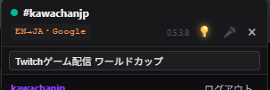

| 表示 | 説明 |
|---|---|
| ● ステータスドット | チャット接続状態（緑＝接続中、黄点滅＝接続処理中、ピンク＝切断・停止） |
| #チャンネル名 | 接続中のチャンネル。右側にプレイ中のゲーム名も表示 |
| EN→JA・Google | 翻訳方向（翻訳元→翻訳先）と使用エンジン（下記参照）。オレンジ色のときはこのチャンネル専用の言語設定が保存されています |
| 数字（0.5.3.8 など） | 拡張機能のバージョン |
| 💡 | 認識ヒント入力バーの開閉 |
| 🎤 | 音声字幕の ON / OFF |
| × | パネルを閉じる（チャット受信・翻訳も停止） |
| エンジン | 説明 |
|---|---|
| Google 翻訳。デフォルトのエンジンで、APIキー不要・無料・無制限で使えます | |
| DeepL | より自然な訳文が得られる翻訳サービス。利用には deepl.com で取得した APIキーが必要です（無料枠：50万文字/月） |
ヘッダーの表示（EN→JA・Google など）は、チャット翻訳に現在使われているエンジンを示します。
DeepL はオプションページで有効化し、「チャット翻訳・音声字幕・送信メッセージ」のどの機能に使うかを個別に選べます。
音声認識（Whisper）は「直前の文脈」を参考にしながら音を文字に変換します。 ヒントはこの文脈として最初に与えられるため、ヒントに含まれる単語は聞き取りの候補として優先されるようになります。 特に効果が大きいのは、音だけでは正しく書き取れない固有名詞です。
例：ヒントなしだと「すぷらとぅーん」→「スプラ通”ーん」のように崩れることがありますが、 ヒントに「スプラトゥーン3」と入れておけば最初から正しい表記で認識されます。
| 入れると効果的 | 例 |
|---|---|
| ゲームタイトル・モード名 | スプラトゥーン3 ガチエリア サーモンラン |
| キャラ名・武器名・アイテム名 | クマサン スシコラ トリカラ |
| 配信者・コラボ相手の名前 | しゃか 加藤純一 |
| 大会・イベント名 | ワールドカップ 甲子園 |
| 配信内のスラング・定番フレーズ | ナイス キル デス |
単語はスペース区切りで並べるだけでOK。文章にする必要はありません。
最後に「。」を付けておくと、ヒントと実際の発話の境界が明確になり、 認識結果（字幕）にも句読点が付きやすくなります（Whisperは直前の文体を引き継ぐ性質があるため）。必須ではありませんが、付けて損はありません。
Hunt Showdown Tarkov のように英語で。日本語のヒントを英語認識に混ぜると、認識言語が引っ張られて逆効果です| 操作 | 動作 |
|---|---|
| アイコンをクリック | パネルの表示 / 非表示を切り替え |
| アイコンを右クリック | 翻訳元・翻訳先言語の変更、表示設定 |
| ヘッダーをドラッグ | パネルを移動 |
| 右下のツマミをドラッグ | パネルをリサイズ |
| 上にスクロール | 自動スクロールを一時停止（「↓ 最新へ」で再開） |
チャンネルごとに言語設定が保存され、別チャンネルに移動すると自動で切り替わります。配信言語は Twitch のタグから自動検出されます。
Whisper は無音や聞き取れない音に対して「ご視聴ありがとうございました」のような存在しない言葉を出力することがあります。 定番パターンは自動除去されますが、新しいパターンが出たら オプションページ → ハルシネーション除外パターンに登録してください（保存後すぐ反映されます）。